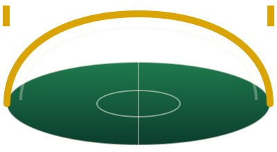

Um portal para explorar a história, as seleções, os estádios e os números que fazem da Copa do Mundo o evento esportivo mais assistido do planeta.
Seis das tradicionais protagonistas do torneio, com o número de títulos mundiais conquistados por cada uma até hoje.
Confederação Brasileira de Futebol
5 títulosAsociación del Fútbol Argentino
3 títulosDeutscher Fußball-Bund
4 títulosFédération Française de Football
2 títulosReal Federación Española de Fútbol
1 títuloThe Football Association
1 títuloArenas icônicas que já receberam finais, decisões e momentos inesquecíveis de Copas do Mundo.

Palco da final de 1950 e da Copa de 2014.
Sede da final da Copa de 1966.
Um dos maiores templos do futebol europeu.
Total de títulos conquistados por cada seleção campeã até a Copa de 2022.
| Seleção | Títulos | Últimas conquistas |
|---|---|---|
| Brasil | 5 | 1958, 1962, 1970, 1994, 2002 |
| Alemanha | 4 | 1954, 1974, 1990, 2014 |
| Itália | 4 | 1934, 1938, 1982, 2006 |
| Argentina | 3 | 1978, 1986, 2022 |
| França | 2 | 1998, 2018 |
| Uruguai | 2 | 1930, 1950 |
| Inglaterra | 1 | 1966 |
| Espanha | 1 | 2010 |